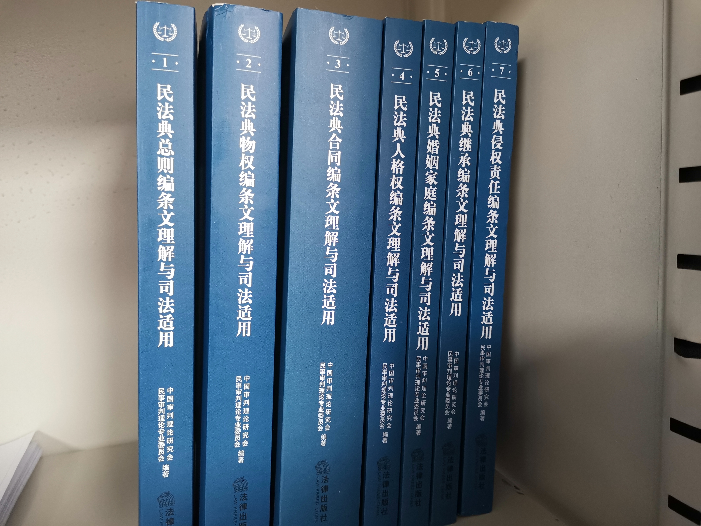

『中国审判理论研究会民事审判理论专业委员会』编著的《民法典条文理解与司法适用。
终于是到货了。那么，按照之前的计划，我需要读完它，并且做出一个让自己满意的笔记。
收到包裹的时候，我嗤之以鼻，还觉得：“嗯？就这么点吗？我还没出全力你就……“
拆开发现实际是这么厚：

是吗，来看完试试？试试便试试。
只是你另一边的考试还来得及么……
那么，我就从第二编物权开始，看到最后，再回到第一编看总则。
原因是总则在很久之前就已经通读一遍，而且总则里没什么直接可以拿出去使用的东西。
这里也有个吐槽。我从最开始进入法学院，所有的书、所有的老师、所有的课程，都是从所谓的『总则』开始讲，开始讲这个法律的性质，讲原则。可我需要听这些吗？
我需要知道它规定了什么，我能怎么运用它才能在『法庭』这个与对手，甚至与法官短兵相接的地方获得优势，才是最重要、最关键的。而在不知多少次的对抗中，我自然会理解所谓的原则，所谓的性质。
而不是一开始就告诉我原则，让我一上来就用『原则』这种如同纸糊的盾牌去和对方讲大道理。
大道理是要口径支撑的。口径才是真理（胡言乱语）
那么现在立即开始。先看《物权编》。
『审议过程』。前三审几乎都集中在『抵押与质押』和『居住权』这几个吵到出耳茧的问题，而第四审的『政治性』和所谓的『时效性』就占了风头，因为COVID-19而在民法典中加入了物业和管理人有权根据政府的应急措施对物业采取措施，业主有义务配合。
这究竟是因为COVID-19修复了一个本来的漏洞，还是我们的法律竟然会为了一场传染病就声称自己有个漏洞再修一下？无论是哪个，都令我非常不安。我不知道这些立法者究竟屁股坐在何处，我只能理解为，COVID-19让立法者醒悟了，不能赋予物业业主对抗紧急命令的权利。
虽然我觉得更可能的情况是他们忘了。
“没错，这样的状况是很奇怪，而且很可疑，但是请相信我已经料到这些情况并且我有理由相信他们只是忘了而不是设置了这么高级的陷阱。”——我
『第一分编』
205 本编调整因物的归属和利用产生的民事关系。
——本来在『利用』和『产生』之间有个『而』。我自己一开始都多打了。
——本来『民事关系』写的是『财产关系』，考虑到新加入的『居住权』并不是一种纯粹的『财产关系』而修改。另外，『相邻关系』也很难说成是一种财产关系。
——去给这个写什么释义写两页也真是够了。能不能整点有用的活啊。
给了个案例，链接到了《政府对出租车的经营权能否注销和划转》。核心观点是：『出租车经营权应是出租公司和出租车司机对其经营财产的一种占有、使用和收益的权利，即出租车经营权属应归出租车司机和公司共同所有，也就是说，出租车经营权当属于物权范畴。』
这就不太对了。物权本身就是遵循法定原则的（《民法典》第116条），这位教授所谓的『出租车经营权』，究竟属于哪部『法律』规定的哪一种物权，包含怎样的权能？属于所有权还是用益物权？如果是用益物权那么属于『土地承包经营权』、『居住权』、『宅基地使用权』、『建设用地使用权』、『地役权』中的哪一种？以及，用益物权是使用他人之物产生的收益权，那么所谓的『他人』又是谁？
这是在抬杠，而杠存在的原因仅仅是它无视了这个案子的真正问题在于『行政机关无法撤销一项自己没有作出的许可』。问题症结，并不在这个出租车经营权究竟是一个什么物权。
206 国家坚持和完善………………
（政治性废话）
207 国家、集体、私人的物权和其他权利人的物权受法律平等保护，任何组织和个人不得侵犯。
——你是不是忘了《宪法》第十二、十三条了？
忘了的话我念一下。第十二条：『社会主义的公共财产神圣不可侵犯。 国家保护社会主义的公共财产。禁止任何组织或者个人用任何手段侵占或者破坏国家的和集体的财产。』第十三条：『公民的合法的私有财产不受侵犯。 国家依照法律规定保护公民的私有财产权和继承权。 国家为了公共利益的需要，可以依照法律规定对公民的私有财产实行征收或者征用并给予补偿。』
品一下。
给了个案例。《”住改商“司法审查应采绝对禁止主义》。目前未被数据库收录，而且对这一条的解读好像没什么影响？
案例是，移动将某小区的某间房改造成了天线房，被小区其他业主发现，要求排除妨害。
这当然该支持啊。我要看的又不是这个，我要看的是『国家』和『私人』的物权被平等保护的案例。
不可能有的吧。
208 不动产物权的设立、变更、转让和消灭，应当依照法律规定登记。动产物权的设立和转让，应当依照法律规定交付。
——与现行物权法完全一致。但是现行物权法的这一条经过了超多争议。
最大的争议就是删去了『记载在不动产登记簿之人属于权利人，动产的占有人属于权利人，但有相反证据证明的除外』，等于删除了一种推定效力的确认方式。
有啥影响？没啥影响。可能会有几个学者不开心，有几个学者开心吧。
因为就算删除了这个，我们也可以通过现有条文得出这个结论啊。
另外，书里讲到一个公报案例『大连羽田钢管有限公司与大连保税区弘丰钢铁工贸有限公司、株式会社羽田钢管制造所、大连高新技术产业园区龙王塘街道办事处物权确认纠纷案』，具有相当的参考价值。
书中给的参考意义是，『法院不能直接判决某人享有不动产所有权，而应当判决目前拥有不动产所有权的一方履行过户手续』。这一点值得警醒，但是案例中其他内容更值得推敲。二审法院直接认定日资企业没有取得土地使用权的权利，显然没有道理。而最高院回避这个问题而是将问题绕到了委托合同，并认为合同无论如何都有效，这是一个正确的思路。
209 不动产物权的设立、变更、转让和消灭，经依法登记，发生效力；未经登记，不发生效力，但是法律另有规定的除外。
依法属于国家所有的自然资源，所有权可以不登记。
至于什么是国家所有的自然资源，直接看宪法即可。
『不动产所有权』、『建设用地使用权』等采用登记生效主义，即第一款前半。
『土地承包经营权』、『地役权』等采用登记对抗主义，即第一款后半。
书中提到了《房屋登记案件司法解释》。但我通读了全文仍然找不出人民法院应当受理不动产登记争议的规定。我上个月刚刚被踢了一次皮球呢（恼）。
嗯，任重而道远，是吧。
210 不动产登记，由不动产所在地的登记机构办理。
国家对不动产实行统一登记制度。统一登记的范围、登记机构和登记办法，由法律、行政法规规定。
链接：《不动产登记暂行条例》《不动产登记暂行条例-实施细则》。规定的非常详细而且现实中的操作就我目前的了解看来，也与之非常吻合。
毕竟这在目前是事关几乎所有小家庭的最大资产的处分规则，没人敢让它陷入混乱。
这本书给的案例和条文对不上号是不是某种特色哦。附的案例是公报案例『陈爱华诉南京市江宁区住房和城乡建设局不履行房屋登记法定职责案』。提供的帮助就是，不动产登记部门不得强制公证。嗯，就这。
但这是行政法的问题吧。
211 当事人申请登记，应当根据不同登记事项提供权属证明和不动产界址、面积等必要材料。
占用民法典的宝贵位置说一句废话。
212 登记机构应当履行下列职责：
（一）查验申请人提供的权属证明合其他必要材料；
（二）就有关登记事项询问申请人；
（三）如实、及时登记有关事项；
（四）法律、行政法规规定的其他职责。
申请登记的不动产的有关情况需要进一步证明的，登记机构可以要求申请人补充材料，必要时可以实地查看。
解读里面写了一句『以形式审查为主，实质审查为辅』，也就是《民法典》并未排除登记机构的合理谨慎义务。但是，没有边界的义务等于没有义务，无需承担责任的义务那就是不存在义务。当法律并没有说明什么情况下需要登记机构进行『实质审查』，那么懒政的基因会导致所有登记都是『形式审查』。
毕竟这最方便。
另外，第二条的行文使用的是『可以』，这赋予的更多是一种调查权而非详细调查的义务。那官老爷们自然就更没有理由和动力去做这些事情喽。
213 登记机构不得有下列行为：
（一）要求对不动产进行评估；
（二）以年检等名义进行重复登记；
（三）超出登记职责范围的其他行为。
214 不动产物权的设立、变更、转让和消灭，依照法律规定应当登记的，自记载于不动产登记簿时发生效力。
您就不能直接在上面209的总规定里直接写『登记』是指『记载于不动产登记簿』来省一个宝贵的条文吗。
别的不说，这个拖沓就不怎么像是拿破仑民法典。
还拖沓得没什么韵律美。
215 当事人之间订立有关设立、变更、转让和消灭不动产物权的合同，除法律另有规定或者当事人另有约定外，自合同成立时生效；未办理物权登记的，不影响合同效力。
比起过去的规定增加了『当事人另有约定』这一除外情形，本质也是为了逻辑更加通顺。
这条本身也是一个通说了，无论是按照台湾地区自以为瑰宝的『负担行为与处分行为之二分』理论、『物权行为无因性』理论还是随便哪种理论，都必须承认，合同项下的标的物是否已经得到处分这件事和合同的效力本身毫无关联。或者说，正因为合同的效力没有问题，合同相对双方不履行、不处分标的物的行为才会导致违约行为。
216 不动产登记簿是物权归属和内容的根据。
不动产登记簿由登记机构管理。
217 不动产权属证书是权利人享有该不动产物权的证明。不动产权属证书记载的事项，应当与不动产登记簿一致；记载不一致的，除有证据证明不动产登记簿确有错误外，以不动产登记簿为准。
条文本身是旧条文，没什么可分析的。书中提供的案例倒是非常的有价值。记载了《人民司法（案例）》2009年第8期的《父母将自住房登记在子女名下不宜认定为赠与》，参考案例是（2008）吉中民三终字第103号。然后网上无法查到原文，倒是可以查到许多无良律师直接将彭老师的文章标成自己原创再把内容改到面目全非夹杂私货写在自己的网站上。嗯，执业环境就是被他们这样败坏掉的。
文章将登记权利人认定为『推定权利人』而非物权的最终认定，是非常正确的。但是，这里需要将整个逻辑链条捋一捋。物权编规定，不动产物权的设立和变更，记载在登记簿上即生效，这一效力是不论其真实物权状况及合同效力的，这也是215条规定的延伸。
举例来说，若一不动产系夫妻关系存续期间购买，又无其他约定，那么根据《婚姻法》，此不动产的性质当然属于夫妻共同共有。但是，如果此时，不动产登记在一人名下，我们只可以说，『按照法律规定和现有证据，这是二人名下的共同财产，而现在登记在一人名下，因此不动产登记出现了错误』，而不能说，『因为法律规定这是双方共有的财产，而现在登记在一人名下，我可以推定你们之间存在赠与的协议』。
登记具有效力但非绝对效力。
不允许用登记去推定其他法律事实的发生，只能用其他法律事实来证伪登记的推定。
218 权利人、利害关系人可以申请查询、复制不动产登记资料，登记机构应当提供。
这更多牵扯到行政案件。
这类案件最麻烦的点不在于说理，而在于如何让基层这些懒政先锋们出一张《不予受理通知书》。
给的案例也说明了，如果需要对登记机构懒政的行为进行诉讼，需要用『行政诉讼』和『行政复议』而不是『政府信息公开』。
219 利害关系人不得公开、非法使用权利人的不动产登记资料。
新增法条，但没什么值得说道的东西，因为它说的对。
主要还是看一下案例。案例是（2015）宁行终字第403号。案例和这条的字面意思没什么关系，但我还是想摘录一段说理。『上诉人以被上诉人仅提供陈林的姓名作为查询房产信息的检索条件不符合法律规定为由，予以拒绝，虽然符合《房屋权属登记信息查询暂行办法》及《房地产登记技术规程》的规定，但却与《继承法》、《物权法》、《立法法》的立法宗旨相违背。上诉人自认，以姓名查询房屋登记信息不存在技术上的障碍，故一审法院判决责令上诉人依被上诉人的申请，履行查询陈林名下房屋登记信息的职责并无不当。』
但我不太理解，你这个机关去档案室找找档案也就叫个扫地僧找一天的事儿，为什么还要折腾诉讼代理人。
真就打断摸鱼重拳出击呗。
220 权利人、利害关系人认为不动产登记簿记载的事项错误的，可以申请更正登记。不动产登记簿记载的权利人书面同意更正或者有证据证明登记确有错误的，登记机构应当予以更正。
不动产登记簿记载的权利人不同意更正的，利害关系人可以申请异议登记。登记机构予以异议登记，申请人自异议登记之日起十五日内不提起诉讼的，异议登记失效。异议登记不当，造成权利人损害的，权利人可以向申请人请求损害赔偿。
异议登记条款。我已经非常熟练，无需再在这里做笔记了。
书里提了个案例倒是蛮关键的。（2017）闽01行终320号，法院认为，『利害关系人认为登记簿记载事项错误而权利人不同意进行更正是异议登记的必要前提』这是法律认定的条件。具体到现实里可能用不上，但是，这可能是某些时候的杀手锏？
这次我是守方，我用不上这招。但是下次我是攻方的时候完全可以拿着这玩意重拳出击。
221 当事人签订买卖房屋的协议或者签订其他不动产物权的协议，为保障将来实现物权，按照约定可以向登记机构申请预告登记。预告登记后，未经预告登记的权利人同意，处分该不动产的，不发生物权效力。
预告登记后，债权消灭或者自能够进行不动产登记之日起九十日内未申请登记的，预告登记失效。
立法资料显示，这条是防止开发商一房二卖或者将已经出售的房屋抵押融资的条款。确实，自物权法颁布至今，它很好地完成了自己的使命。
另外，『预告登记』制度是一项物权制度，本质在于使被登记的债权具有物权效力，而『合同备案』制度仅仅是商品房开发商负担的一项公法义务。也就是说，『预告登记』可以使一项债权产生与物权同等的排他效力，而『合同备案』只是将一项债权提交给公权力机关，并不会使债权性质发生改变。
另外，案例显示，221条第二款明显缺失了一项构成要件，那就是『（非因权利人自身原因而）未申请登记的』。如果发生类似法院查封等无法归因于权利人自身的原因，预告登记当然不会因为时间届满而失效。
222 当事人提供虚假材料申请登记，造成他人损害的，应当承担赔偿责任。
因登记错误，造成他人损害的，登记机构应当承担赔偿责任。登记机构赔偿后，可以向造成登记错误的人追偿。
登记机构的赔偿责任属于行政赔偿肯定是没啥问题。但是书里写的这个知识倒是够冷也够有意思。德国法规定『不动产登记簿由地方法院统一掌管，法院对本区域内的土地有管辖权』，倒是闻所未闻，可能这也是『专属管辖』的由来吧。只有法院统一掌管不动产资料，那么涉及不动产的案件由掌管不动产的法院管辖，理所应当，相反倒是我们国家，由行政机关掌管材料，却要强制本地法院管辖不动产案件……嗯，也说得通就是了。同样，日韩两国也都规定『法务所、地方法务局或其支局，派出所为登记所』、『法院为登记机关』。美国的不太清楚，美国的似乎也有统一的登记机关，但并非法院。
一般来说，登记错误都是混合过错，即申请人故意提交虚假材料，登记机构没有尽到职责审查出来，甚至二者恶意串通。
有学者主张『登记是私法行为，因此登记机构的错误登记产生的赔偿责任属于民事责任』，但这显然是说不通的，因为登记机构本身并非营利法人，对外承担的责任必然是国家赔偿，赔款的来源必然是公共财政。
另外，『造成登记错误的人』指的是登记机构的存在故意或者重大过失的工作人员。这是超过我理解的，我看法条的字面理解只有提交错误信息的申请人。但是仔细一琢磨，确实如此，因为这个人已经在第一款里承担过一次责任了，不存在追偿的问题。又见《房屋登记案件司法解释》第12条和第13条，如果不存在申请人和登记机构恶意串通的情况，二者承担的本就是互不相干的，按照过错程度划分的『按份责任』。
嗯，理解了。
案例里有两个案件，分别是（2019）鄂01行终590号、（2016）湘0203行赔初1号，都是申请人递交了虚假的离婚协议。但是，前者法院判决登记机构有过错而后者没有，原因在于，前者有确实的损失而后者没有。
我老觉得这些人写案例老不写重点做什么，这才是大实话吧。否则光看两个案例，完全就是矛盾的。
223 不动产登记费按件收取，不得按照不动产的面积、体积或者价款的比例收取。
那 是 当 然 的 了。税都这么收过了，写个破本子也要再收一次税吗。
这就减轻群众负担优化营商环境了？不要把我们说得和印度一样。这种程度的清廉和风气对于一个千年尊崇儒教的文明古国来说，真的就是理所应当的，把它写出来只会像『抢劫警车是违法的』一样掉份儿。
当然我说的只是后半句。前半句没啥问题。
224 动产物权的设立和转让，自交付时发生效力，但是法律另有规定的除外。
后面的除外可能是『动产抵押权』的设立。因为动产抵押权也是动产物权之一嘛。
理论上确实存在『意思主义』的交付和『形式主义』的交付，但是非常显然，『形式主义』的交付更符合理论的一惯性，总不能说因为这个东西是动产，我就直接把『物权行为』和『债权行为』的界限擦除，认为针对动产的债权行为可以直接产生物权变动的效力。
这就像是鱼肉和鸡肉当然是两种不同的肉，总不能说清蒸的时候两种肉口感不同，所以两者区别很大，而油炸的时候两种肉都很美味，你就说『嗯，反正都是发生美拉德反应的蛋白质』。
案例是（2019）最高法民申1305号，一看书上写买的是米我就来劲了，但仔细一看是玉米……我说啥呢。总之，这个案子的问题在于把《货权转移证明》交给买受方，是否可以认定为交付。国际货物运输中，买卖双方交付提单，提单转移就是物权的转移，原因是提单上记载的人可以凭借提单无条件向承运人取货。这案子里的单据完全不能体现这一点。
225 船舶、航空器和机动车等的物权的设立、变更、转让和消灭，未经登记，不得对抗善意第三人。
这里我想提一个自己的新理论，虽然有点滑坡谬误的感觉。
特殊动产的登记对抗效力这个问题虽然从物权法颁布开始就已经施行到现在也没出什么问题，但是这不符合人们对日益扩张的行政权力的期待和要求。当行政机关具有无可争议的极为强大的公信力的时候，登记对抗与登记生效的区别便不再有意义，因为没有人敢于无视登记；而当行政机关的公信力式微时，登记对抗与登记生效的区别也没有意义，因为没有人愿意特意去做一个没有物权效力的登记。
嗯，逻辑很混乱对吧，但是我想一想，我们国家甚至还有著作权登记这么个说法。但是，著作权显然在文章写就之时就归属于作者，著作权登记与否，根本不会影响著作权的效力。
那么我现在如果不去给我写的这个预计要有30万字的笔记进行著作权登记，当然不会影响我的著作权行使，也不会影响我对抄袭者重拳出击。那我如果登记了呢？也不会因为登记而多出什么权利。
这样的登记更多是一种『公证』。字面意义上的公证，因为公证处确实也没法做什么事。
况且，对于大多数特殊动产（指车辆），管理实在是严格得密不透风又腐败得恶臭难闻。君不知离首陀罗们最近的刹帝利往往就是最凶残、最无耻又最肥的流油的刹帝利。所以说，在这样严密的管控下，还坚持登记对抗效力，似乎有点过于保守了。
嗯，说完了才觉得自己的理论一塌糊涂。我违背了自己一直主张的另一个理论那就是『如果一个东西没有问题，那就不要去修改它』。
这里存在一个问题，那就是『特殊动产的质权』。物权编并没有规定特殊动产如何进行质权登记，而且现实中确实不存在特殊动产质权的登记办法，客观上无法登记。但是，『特殊动产质权』显然也属于『特殊动产物权』，当然没有理由排除出此条的适用。而且更离谱的一点在于，质权本身就以『交付』作为生效要件。这堆要素叠加起来的结果就是，委员会认为『在进一步完善动产担保制度和登记规则之前，不宜认定质权必须登记才有对抗效力』。就是搁置争议了。
案例提示了一个事，那就是《道路交通安全法》的登记制度和特殊动产的登记制度是两回事。前者是公安机关准予上路的登记，而后者是物权公示的登记。
为什么非得是两回事呢。大政府最好还是担起一个大政府应有的大样子，不能想要管理的时候就想那个肌肉doge一样，想要摸鱼的时候就像委屈柴柴一样。
226 动产物权设立和转让前，权利人已经占有该动产的，物权自民事法律行为生效时发生效力。
又称『简易交付』、『先行占有』。
过去的法条写的是『依法占有该动产的』，现在把『依法』删除了，也总算是把小脑瓜转过了弯儿来。
也亏得他们能把这么个简单的问题讨论出花儿来。若使不『合法』就不能『简易交付』，那难不成两人即便达成了一致，还要把东西来回抛一下才算是完成了法律的交付义务？
可能从旧中华法系民刑不分的角度来看，法律的最重要作用是规民训民，但物权法作为民事法律，本就不应该承担有教无类的教化义务。它并不需要判断『非法占有』下的占有人应该怎么处罚，而只需要判断，现在双方达成了交付的合意，但是东西却在被交付人的手里了。
你还需要讨论东西是怎么到他手里的，然后给出一个不同的答案吗？
据说这一词语也是巩献田教授的强烈反对之下保留下来的。
嗯，就是那个写《物权法》的制定开了历史倒车的公开信的北大法学教授。
那封公开信我只能觉得是他疯了，但事实证明疯子只是把大家不敢说的话说了出来。难道物权法背弃了共产主义最基本道路这一件事，大家看不出来么？看出来了，只是大家都知道说出来会被当成疯子罢了。更别提现在没有人会去认真的思考这个问题了。
这涉及非常核心的政治问题，并不是不敢讨论，而是我认为我还没有讨论这个问题的学术水平。
至少我无论如何都不会学巩献田教授那样。
227 动产物权设立和转让前，第三人占有该动产的，负有交付义务的人可以通过转让请求第三人返还原物的权利代替交付。
又称『指示交付』。同前一条，也是将原条文中的『第三人依法占有该动产的』里面的『依法』删了。
这只是修bug而已。
另外立法者提示，本条文没有修另一个bug，那就是并未增加规定『负有交付义务的需要通知占有动产的第三人指示交付的情况』，因此此后也不能将『通知第三人』作为指示交付即返还请求权之让与的必要条件。
此外还有一个可能引发bug的点，那就是善意取得的判定时点问题。现行物权法司法解释（一）规定，善意取得判定时点，在『指示交付』的场合，为『转让人与受让人之间有关转让返还原物请求权的协议生效时』。这其实并不违背指示交付原理。因为，指示交付的交付行为并不是实物的交割，而是返还原物请求权转让合意的达成。
还有一个bug点，那就是如果这个第三人不知道是谁（例如动产被盗窃的场合），可否达成指示交付。嗯，研究委员会的大佬们表示『既然有人会愿意达成这种协议，那也应该尊重这种意思自治』所以不修这个bug了。
这条看起来就是会产生bug体质的条文，很想叫她育碧条款。
228 动产物权转让时，当事人又约定由出让人继续占有该动产的，物权自该约定生效时发生效力。
又称『占有改定』。过去最开始学法律的时候这玩意还是可以难倒一片油咖喱的名词解释题呢。
几乎都是过去学过的东西，我已经相当熟练了，无需再做什么笔记。唯独仍然需要提醒一下自己，『占有改定』不能也不可能构成符合善意取得制度要求的交付。
说实话现实里也没什么人会搞这个占有改定，真有这样的需求，也会搞融资租赁或者签订回购协议。没有道理去适用一项古老、僵化而又有缺陷的制度，而放着更加符合当事各方意思的制度不用。
未完（当然未完了，这才多少条呢